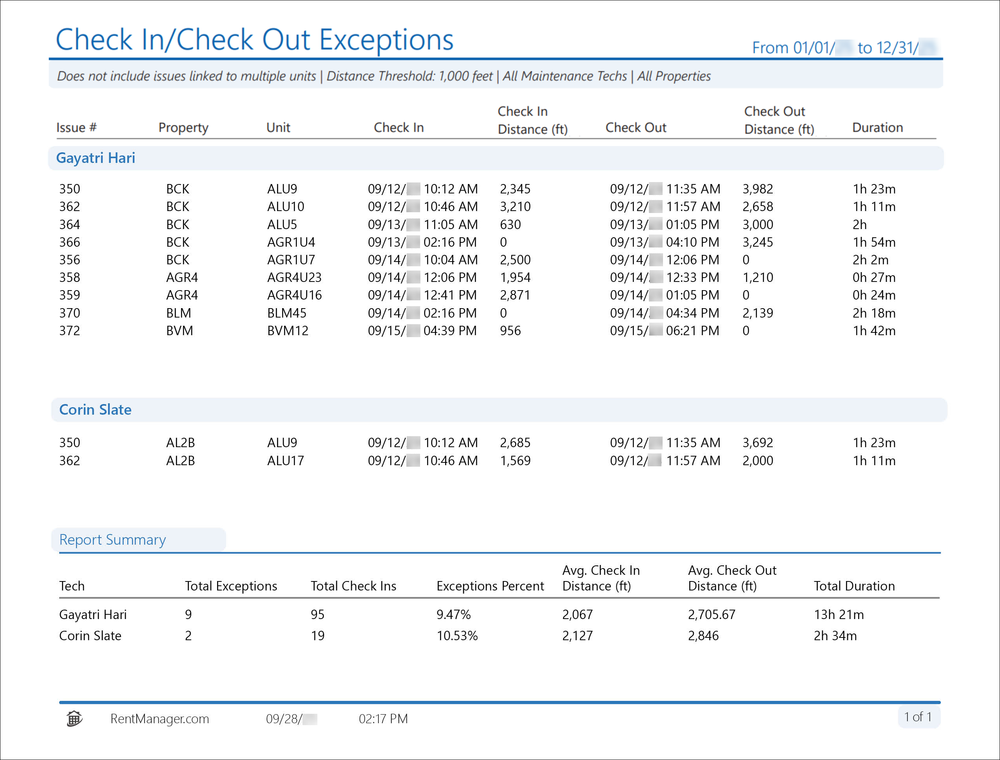
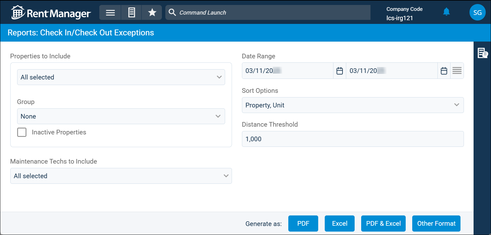

Source: https://rmxhelp.rentmanager.com/Topics/Express/Other/Reports/Check-In-Check-Out-Exceptions.htm
Check In/Check Out Exceptions (Report)
The Check In/Check Out Exceptions report lists service issues where a technician has either checked in or checked out at a distance greater than a specified threshold. This allows you to audit the distance between a technician's check-in and/or check-out location in relation to the unit where work is being performed to ensure that work time is being properly reported. Issues linked to multiple units are not included in the report results.
Related Preferences
In order for technicians to be located when they check in and out of issues, the option Allow techs to be located while On Duty must be enabled in system preferences. If this option is not enabled, this report cannot generate location data. For more information, refer to rmAppSuite Service (System Preferences).
Related Privileges
| Group | Privilege | Column |
|---|---|---|
| Letter/Email Templates/Reports/Packets | Run reports | Enabled |
Additionally, on the Reports tab, you must have access to Check In/Check Out Exceptions.
For more information, refer to Control User Access.
To view the Check In/Check Out Exceptions report, do the following:
-
Go to
 arrow_forward Services arrow_forward Service Manager arrow_forward Check In/Check Out Exceptions.
arrow_forward Services arrow_forward Service Manager arrow_forward Check In/Check Out Exceptions.
The Reports: Check In/Check Out Exceptions page displays. -
Adjust the report options as desired. Each option is described below.
-
Generate the report in your desired file format(s).
Related Preferences
Reports may look different depending on whether or not the Use modernized report style system preference is enabled. For more information, refer to General Report Options (System Preferences).

Report Options
The report options described below determine what data displays in the report.

Properties to Include
Select each property or a property Group to be included in the report.
More Information
This field populates only with the properties to which you have access. Your access to properties can be managed from your user account or on the property's details page. For more information, refer to Limit Access to a Property.
Optionally, check Show Inactive Properties to include properties that are no longer active.
Maintenance Techs to Include
Select each maintenance technician to include in the report results. Each technician displays as their own subheading in the report with their associated service issues listed below.
Date Range
Enter or select the date range to determine the data that displays in the report.
In the Date Range section, set the From and To dates for which the report should examine data.
These fields automatically populate with today’s date. Enter a different date or select a date from the calendar. Alternatively, adjust the dates using the available preset buttons or click  to open more options for setting a date range.
to open more options for setting a date range.
Sort Options
The report is first sorted alphabetically by technician name. Select one of the following options to determine how the report results are sorted in each technician subheading:
| Option | Description |
|---|---|
|
Property, Unit |
Issues are sorted alphabetically by property short name, then are further sorted alphanumerically by unit name. |
|
Check In |
Issues are sorted chronologically (oldest to most recent) by the date and time at which they checked in for work. |
|
Check In Distance |
Issues are sorted numerically (lowest to highest) by how far they were from the unit when they checked in for work. |
|
Check Out Distance |
Issues are sorted numerically (lowest to highest) by how far they were from the unit when they checked out for work. |
|
Duration |
Issues are sorted numerically (lowest to highest) by the length of time they were checked in for work before they checked out. |
Distance Threshold
The distance (in feet) from the selected units' locations to exclude. If a technician checked in or out at a distance greater than the established Distance Threshold from the issue's associated unit, that issue and its assigned technician is included in the report.
Report Results
The report results are described below including, if applicable, section, column, and subreport descriptions.
Report Header
The report header displays the report name and key information selected in the report options, such as date information and which properties were examined in the report.
Column Descriptions
The columns that display in the report are described below.
| Column | Description |
|---|---|
|
Issue # |
The system-generated number assigned to the service issue. |
|
Property |
The short name of the issue's associated property. |
|
Unit |
The name of the issue's associated unit. Issues linked to multiple units and issues with no linked unit are not included in the report. |
|
Check In |
The date and time at which the technician checked in for work on the issue. |
|
Check In Distance (ft) |
The distance away from the unit (in feet) where the technician checked in for work on the issue. |
|
Check Out |
The date and time at which the technician checked out for work on the issue. |
|
Check Out Distance (ft) |
The distance away from the unit (in feet) where the technician checked out for work on the issue. |
|
Duration |
The total amount of time the technician spent checked in for the issue before checking out. |